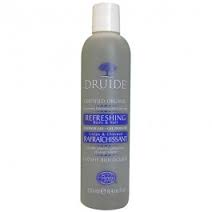
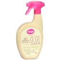
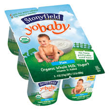
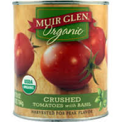

Products

Druide Refreshing Shower Gel
8.9


Ology Eliminator Spray
10

Stonyfield Yogurt
8.9

Muir Glen Diced Tomatoes
8.9
Ratings
EDeC ratings range from 0 to 10 — the higher the score, the better the product. Our scores are based on evaluations of a comprehensive set of health, environmental and social issues. If you are looking to switch to a better product, EDeC's summary rating can be used to easily identify the best products in a category. If you are looking for more detail, you can drill down from our summary rating to learn more about a product or company’s performance.
EDeC's summary rating combines product- and company-level information to characterize a product's health, environmental and social impacts. The best products rate 8 or above; the worst rate 4 or below. We provide a summary score because consumers want simple, actionable information that makes it easy to select better products. See the Scoring section below to learn how to interpret EDeC's numerical 0-10 scale.
EDeC's summary rating is compiled from three sub-scores addressing Health, Environment and Society. In each of these broad areas of concern, EDeC identifies the critical issues that need to be evaluated and collects data on a set of indicators that are the best-available measures for assessing performance on that issue. See the Health, Environmental and Society sections below to learn more about the issues that EDeC covers.
EDeC makes it easy to unpack any summary rating and see how a product or company performs on every issue and indicator we track. To view the complete set of indicators used to derive any rating, select the drop-down arrow on any Health, Environment or Society score on the EDeC website or follow the “Behind the Ratings” link in our mobile applications.
What's Covered in our Ratings: Health
Our Health score characterizes the potential health impacts associated with use of a product. GoodGuide uses a common assessment framework, pictured here, to organize the various indicators that are available to score products on Health. There are four broad classes of indicators:
- Human health impact indicators provide information about the potential health effects of a product category: What degree of health concern do product ingredients pose? What is the overall nutritional value of a food product?
- Data adequacy indicators track whether the information needed to assess health risks is available for a product.
- Other negative aspect indicators provide information about how a product is produced and regulated: Are any of its ingredients banned or restricted? Does its production involve the use of “bad-actor” chemicals targeted for phase-out? Does it contain contaminants from its production process?
- Product management indicators identify whether a company or its products are managed sustainably, based on third-party certifications that verify health or environmental performance.
The availability and type of health scores vary across different product categories:
- For personal care and household chemical products, health scores are driven by the number of ingredients in a product that are of health or regulatory concern.
- For food and beverage products, health scores are driven by our assessment of the nutritional value of the product, based on its ratio of recommended to restricted nutrients.
- For other product categories like paper, lighting or appliances, no health scores are assigned because typical product use is not associated with any human health issues.
What's Covered in our Ratings: Environment
Our Environment score characterizes the potential environmental impacts associated with the manufacture, sale, use and disposal of a product. GoodGuide uses a common assessment framework to organize the various indicators that are available to score products or companies on environmental performance. There are four broad classes of indicators:
- Environmental management indicators characterize overall corporate governance, the policies and practices a company has adopted (including their applicability to its supply chain), a company's compliance record and involvement in controversies, and whether a company is engaged in any exemplary practices.
- Transparency indicators track whether the information needed to assess environmental issues is made available by a company. Resource use indicators track natural resource inputs used by a company to manufacture products, including materials, water, and energy.
- Environmental impact indicators track the outputs of a company's manufacturing processes, including whether a company's emissions or production practices are contributing to global warming, creating air or water pollution, generating waste, or adversely affecting ecosystems or biodiversity.
Whenever possible, EDeC evaluates both the environmental characteristics of a specific product and the environmental policies and performance of the product's manufacturer. However, because the availability of product-level environmental data is limited and varies by product category, EDeC's Environment scores are primarily based on company-level data. The relative contribution of product- vs company-level data to Environment scores varies by product category:
- Environment scores are solely based on company-level data for personal care products, household chemicals, food, pet food, and apparel.
- Product-level data contributes 25% of Environment scores for tampons, diapers and drinks.
- Product-level data contributes 50% of Environment scores for cell phones.
- Product-level data contributes 75% of Environment scores for bulk coffees and teas, chocolate, paper, lighting products, and appliances.
What's Covered in our Ratings: Society
Our Social score characterizes the social impacts associated with the manufacture and sale of a product. GoodGuide uses a common assessment framework to organize the various indicators that are available to score products or companies on social performance. There are five broad classes of indicators:
- Management indicators characterize overall corporate governance, the policies and practices a company has adopted (including their applicability to its supply chain), a company's compliance record and involvement in controversies, and whether a company is engaged in any exemplary practices.
- Transparency indicators track whether the information needed to assess social issues is made available by a company.
- Consumer indicators include customer health and safety policies and controversies and product recalls, as well as information about labeling and marketing practices.
- Community indicators track a company's community relationships, stakeholder engagement initiatives, and public policy positions.
- Worker indicators track company performance on occupational safety and health, diversity and equal opportunity, and human and labor rights.
Because the availability of product-level social data is limited and varies by product category, EDeC's Social scores are primarily based on company-level data. The relative contribution of product- vs company-level data to Social scores varies by product category:
- Social scores are based solely on company-level data for personal care, household chemicals, food, pet food, paper products, apparel, cell phones, lighting products, and appliances.
- Product-level data contributes 50% of Social scores for bulk coffees and teas and chocolate.